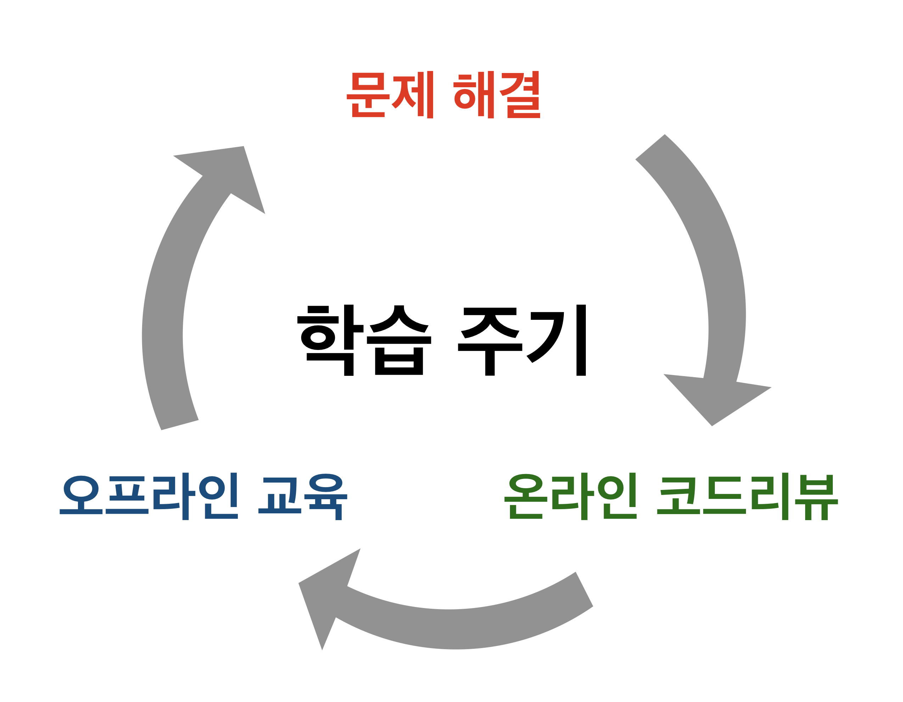

클린코드를 위한 TDD, 리팩토링 with Java
유지보수의 중요성을 말로 설명하는 것은 누구나 쉽게 할 수 있다.
하지만 '깔끔한(clean)'소스코드를 직접 작성하며 그 중요성을 실현하는 것은 결코 쉽게 할 수 없다.
급변하는 사회에서 소프트웨어도 시시각각 변화를 요구받기 마련이다.
변화에 질질 끌려가기보다 그 앞에 서려면, 클린 코드는 필수 역량이다.
클린 코드, 테스트, 리팩토링은 나중에 여유가 생길 때나 추구할 수 있는 꿈 같은 것이 아니다.
소프트웨어의 변화에 유연하게 대응하고 싶고, 자기 발전을 꿈꾸는 모든 개발자에게 이 강의를 추천한다.
클린코드를 위한 TDD, 리팩토링 with Java
- 기간: 2018-01-06(토) ~ 02-03(토) 5주
- 오프라인 강의: 2018-01-06(토) ~ 02-03(토) 5주
- 오프라인 강의시간: 매주 토요일 13:00 - 18:00
- 온라인 코드리뷰: GitHub을 통해 수시로 진행
- 장소: 강남구 강남대로 62길 23 4층 코드스쿼드
- 문의: 070-4117-1005 / yoda@codesquad.kr
클린 코드가 당신의 우선순위에서 밀려나서는 안되는
세 가지 이유
유지보수하기 좋은코드
변화에 대응하는 핵심 능력
프로젝트 협업 능력 향상
개발자의 커리어 패스를 좌우하는 클린 코드 구현 능력. 아직도 뒷전인가?
5주 커리큘럼을 통해 당신이 얼마나 크게 성장할 수 있는지 경험해보자.
커리큘럼
온 & 오프라인 결합형 5주 커리큘럼. 매주 다른 미션. 온라인을 통한 코드리뷰 시스템 운영.
모든 미션은 콘솔 기반 프로그래밍으로 시작하여 웹 UI까지 구현하며 완성하게 됨
오프라인
-
1주차: 단위 테스트, OOP
- 코드 리뷰 방식 공유
- junit을 활용한 단위 테스트 강의
- 초간단 자동차 경주 게임 구현 및 코드 리뷰
- spark.java를 활용한 웹 프로그래밍
-
2주차: TDD와 리팩토링
- 초간단 자동차 경주 게임 피드백
- TDD/리팩토링 강의
- 문자열 계산기 구현을 통한 TDD/리팩토링 실습
- 로또 미션 구현 및 코드 리뷰
-
3주차: 자바 8의 스트림, 람다
- 로또 미션 피드백
- 자바 8의 stream과 람다 강의 및 실습
- 볼링 게임 미션 구현 및 코드 리뷰
-
4주차: ATDD 기반으로 웹 애플리케이션 개발
- ATDD, 웹 프로그래밍 아키텍처 및 테스트 강의
- 자바 웹 프로그래밍에서 ATDD 실습
- 자바 웹 프로그래밍에서 객체지향 개발 실습
-
5주차: 웹에서 ATDD, 리팩토링, Clean Code
- 자바 웹 프로그래밍에서 ATDD, 리팩토링, clean code 피드백
- Mock 프레임워크를 활용한 테스트
- 객체 지향 프로그래밍 연습 방법
- 테스트, 리팩토링, clean code 강의 정리
온라인
-
매주 오프라인 강의에서 주어진 미션을 각자의 일상에서 구현하며, 그 소스코드를 통해 강사와 온라인 코드리뷰 피드백을 진행한다.
GitHub pull request를 통해 강사에게 소스코드 검토 요청, 강사는 각 수강생의 소스코드를 리뷰하고 피드백을 남긴다.
한 번 결석했더라도, 코드리뷰를 통한 개인 코칭 시스템의 도움으로 안정적 학습이 가능하다.
- 
교육특징
시간과 공간의 제약을 크게 줄인 교육방식
더 이상 ‘내가 이 날 수업 빠질 것 같은데’, ‘결석하면 수강료가 아까울텐데’ 같은 걱정을 하지 마세요. 여러분은 개발자입니다. 이는 원격으로도 충분히 피드백을 주고받으며 교육을 받을 수 있다는 의미입니다. 우리 교육은 개발자들의 참된 성장에 직접적으로 기여하고자 하기에, 교육 방식 또한 개발자에게 최적화하여 준비했습니다.
개개인 코드리뷰를 통한 심도있는 피드백
이 강의에서 가장 중요한 것은 당신이 작성한 소스코드 입니다. 강사는 매일 상시로, 당신의 얼굴이나 말이 아닌 바로 소스코드를 통해 당신을 파악하고 그에 따른 피드백을 서면으로 남길 것입니다. 이렇게 남은 피드백 로그는 사실상 그 어떤 강의자료보다도 더욱 당신에게 유의미할 것입니다.
수강대상
"당신이 실무 경력 최소 1~3년 이상의 자바 개발자이며,
-
유지보수의 중요성을 알고
기능 추가, 결함 수정 등이 있을 때 마다 매번 새로 만드는건 막대한 비용이니까.
- +
-
깔끔한 코드의
중요성도 알지만고통스러운 레거시 코드, 도대체 무슨 생각으로 짰는지 모를 코드가 괜히 탄생할까?
- +
-
제대로 배워본 적이 없다면
학교에서도, 학원에서도 가르쳐주지 않는다. 직장 사수조차 모를 때가 많다.
이번에 다가온 큰 성장의 기회를 놓치지 말자."
수강생 후기
온라인 코드리뷰를 통해 피드백을 받고, 오프라인 강의 비중은 줄인 강의가 생소한가요?
이미 다른과정에서 비슷한 교육 방식을 경험해 본 수강생들의 성장 경험을 확인해보세요.